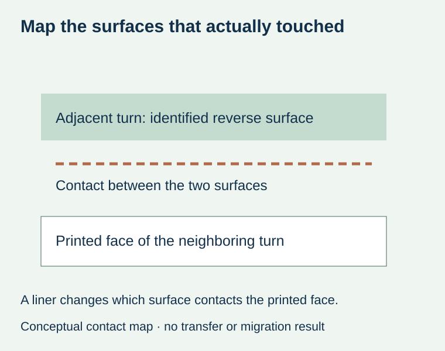
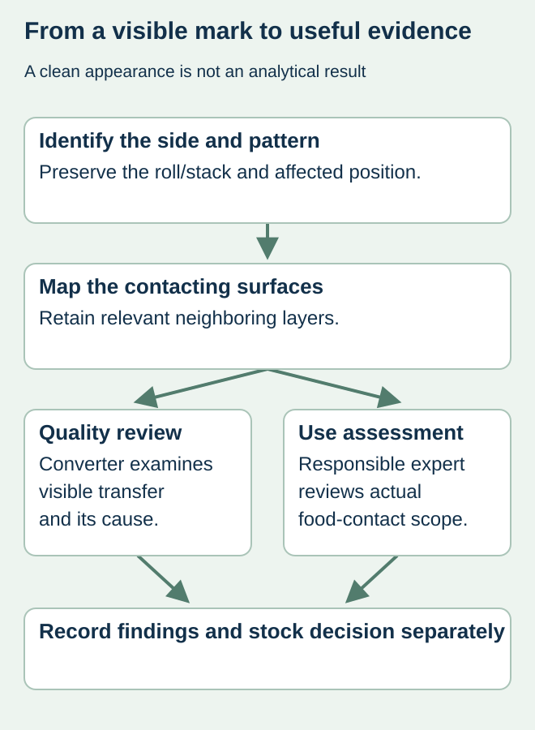

A food-label buyer opens a roll and sees print-like marks on a reverse surface. The front image may look acceptable, so the team assumes a cosmetic rub problem. Another person calls it unsafe without knowing which surfaces contacted each other. Neither conclusion is established by the initial observation.
Preserve the material and map the actual contact between layers before interpreting the marks. Record what is visible, where it occurs and which surface received it. Separate visible quality evidence from the responsible assessor’s food-contact evaluation.


What the term set-off does and does not establish
EuPIA’s food-contact printing glossary describes set-off as transfer through contact between different sides during stacking or reeling, and distinguishes visible from invisible set-off. Visible marks can be a quality concern, but a clean-looking surface does not establish that no substances transferred. Conversely, a visible mark alone does not quantify migration or decide finished-package suitability.
First identify whether the item is a pressure-sensitive label on a release liner, a stack of cut labels or another printed packaging component. In a wound pressure-sensitive construction, identify the face of one turn and the surface it actually contacts on the adjacent turn. Do not copy a diagram of unlined film directly onto a lined label roll.
Make a side-and-contact record
| Evidence | Record explicitly | Question it supports |
|---|---|---|
| Material identity | Face, liner if present, printing/finish and roll or stack reference | Which construction is affected? |
| Receiving surface | Exact side and position of the mark | Where did the observed material appear? |
| Contact relationship | Which neighboring surface touched it | Could the visible pattern correspond to that contact? |
| Extent | Observed repeats or stack positions and unexamined stock | What is known, rather than assumed, about coverage? |
| History | Receipt, winding/stacking and known storage or handling | Which conditions require technical review? |


Keep the original arrangement available
Before unrolling or separating all affected stock, ask the investigator how to preserve representative sections. Mark references outside relevant evidence where appropriate and retain the relationship between front, reverse and adjacent layers. Avoid wiping, applying solvent or heating a sample to see whether the mark disappears; that can alter what the technical team needs to examine.
For a hypothetical sauce-label delivery, a repeating reverse mark may resemble part of the neighboring printed design. That resemblance supports documenting a possible contact relationship; it does not prove the ink system, cure or winding setting responsible. A detached smear with no retained neighboring layer may leave that relationship unresolved.
Use separate quality and food-packaging decisions
Ask the converter to investigate the visual defect and propose the appropriate correction. Keep the actual food-contact arrangement and intended use available to the responsible packaging assessor. A successful rub observation, supplier ink statement and finished-package assessment are different forms of evidence. One should not be relabeled as another.
The ink-document guide links components and documents to the intended package. The rub guide addresses a different exposure to friction. Set-off concerns contact in a reel or stack, so an abrasion test on an exposed face may not answer the same question.
Release stock against the actual agreed scope
Record the converter’s findings, any limitations and the responsible stock decision. Keep replacement shipment identity linked to the original complaint. Do not assume that waiting longer, adding a coating or rewinding the rolls is a universal remedy. Those are technical proposals whose effects and use suitability require confirmation for the actual food-label construction.
Discuss the unresolved label requirement
Identify the printed material, roll/sheet reference, side carrying the observation, contact arrangement and storage history. Ask the responsible converter and food-packaging reviewer what evidence they need. Prepare a label specification inquiry. The contact page opens an email draft and lists email or WhatsApp for attachments. Supply, proof options, testing, pricing and timing require project confirmation.